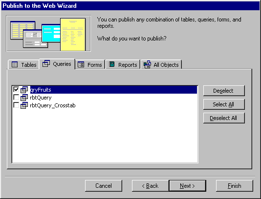
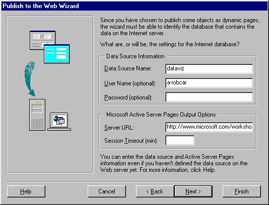

|
| ||
|
| ||
Robert Carter, MSDN Online Technical Writer
George Young, Web Development Lead
Microsoft Corporation
January 13, 1998
This article is the first of a two-piece series on preparing and hosting database sites on the Internet. It covers how to display your data graphically, give users a choice on how they view it, and then publish on the Internet through a commercial ISP service. It presents the ASP code and graphics techniques used to generate bar and column graphs dynamically and a discussion about why to consider doing so, interspersed with information on how to stage the final product. Article 2, Going Live, will address all the steps you need to take to publish your database on the Internet yourself (i.e., hosting your own server), and will address such arcana as ODBC (Open DataBase Connectivity) interfaces, DSN (Data Source Name) drivers, and DNS (Domain Name Server) addresses.
ContentsI prefer my information served up visually, when possible. I find it's much easier to digest big information sets and draw conclusions from the data when it is presented using graphic constructs. Working with George Young, one of the MSDN Online Web Workshop's programming whizzes, I was able to create some fun -- in the sense of "not painful" -- data-visualization HTML code that should spruce up any data-driven site. (Who am I kidding? He created. I sat there and said, "That's great, but can you make the lines orange?") Take a look at our little display for yourself. (You can download the sample code and test it if you have Microsoft Personal Web Server installed.)
As you will see, generating bar and column charts from your data is pretty straightforward. Should you want to expand your charting capability to pies, line charts, or other graphs, things get a little more complex. All of the examples created here assume you can do the hard part, getting your database to produce the information you want.
Although the display techniques we present in this article rely on HTML with Active Server Pages (ASP) inserts, George created a standalone Web site to ensure our musings were actually implementable. In fact, I strongly recommend you do the same. By using Personal Web Server to set up your site locally (use the word "staging" if you want to sound official), you avoid the added hassle of transferring all your files via FTP to your host server each time you make a change or want to test a new idea. Our application was created on a PC running Windows® 95, and we used a hodge-podge of Microsoft Access, Microsoft FrontPage, and Personal Web Server, each with ASP capability.
For those of you who think displaying graphs and charts is simply about giving graphic designers something to do, you couldn't be more wrong. Many people, chief among them Edward Tufte  , would argue that such "information design" is critical to how we process, interpret, and act upon data before us. Beyond being "prettier," graphic representation of quantitative data facilitates understanding and, properly done, guides viewers to infer conclusions and otherwise derive meaning from the data.
, would argue that such "information design" is critical to how we process, interpret, and act upon data before us. Beyond being "prettier," graphic representation of quantitative data facilitates understanding and, properly done, guides viewers to infer conclusions and otherwise derive meaning from the data.
One of the best examples of the power of good information design comes from Victorian England. In The Visual Display of Quantitative Information, Tufte explains that by displaying mortality data visually, Dr. John Snow was able to determine that a cholera outbreak in London was due to a contaminated public water well. Presenting his findings to the local city council, he was able to convince them to shut down what his data led him to believe was the chief offending well. Mortalities promptly dropped.
Apple and Orange Harvest, 1990-1996
|
Raw Data
|
|||||||||||||||||||||||||||||||||||||||||||||||
Figure 1. Apple harvest data from different years
Beyond the obvious differences in color and presentation, a graphic rendering of data aids user understanding by selectively amplifying and diminishing different elements. Consider the 1993 apple harvest of 1,420 apples. Chances are people looking at this chart are more interested in the trends of the harvest than the fact that exactly 1,420 apples were harvested. The graph hides the exact number (the reader could eyeball a harvest of 1,300-1,400 apples), but explicitly reveals the harvest was up from 1992, slightly higher than the 1994 harvest, and overall was a pretty good crop. You could do the same figuring with the table, but the exactness of the numbers makes relative comparisons more compute-intensive for your brain.
For a more complete discussion of this and many more examples of the power of proper information design, I encourage you to read Professor Tufte's or other information design books. And be honest, isn't the information display above left much easier to read than the table above right?
Before we can visualize data, we have to produce it. We used Microsoft Access to create a small table of apple and orange harvests. We then created a query to control how our table was displayed. The query becomes the window into how visitors to your site will see your data.
Once you have constructed a query (or set of queries) that produces the output you want, get it ready for the Web. From the Microsoft Access Files menu option, select Save as HTML. If you have already created a profile you want, highlight it; otherwise select the Next button. A tabbed dialog box similar to your existing Access project will appear. Select all the queries you want to be exported (see Figure 2). Click on the Next button again.

Figure 2. Microsoft Access Web publishing wizard query select
If you have a template that you want to use, highlight it using the Browse option of the dialog box that appears; otherwise continue by pressing Next. On the subsequent dialog box, you are given a choice of Static HTML, Dynamic HTX/IDC, and Dynamic ASP. Select Dynamic ASP, since you will be generating dynamic database-generated pages. The dialog box shown in Figure 3 appears.

Figure 3. Microsoft Access Web publishing wizard ASP and Data Source prompts
In the Data Source Name box, type the name you want to call your data source. If you plan to FTP your data up to a hosted site, find out if you need to get a Data Source Name from your ISP. Otherwise, assign your own. The same is true for the Server URL prompt. Input the URL of the address where the site will be posted; if you plan to test locally first, create a duplicate file structure on your hard disk. (We'll discuss the meaning of each of these prompts in the next article.)
Finally, the wizard asks you to choose a location to store the file, and whether you want it to create a home page. Enter a location, and check the create home page option if you wish (we're still going to monkey around with the file later, whatever you do). The wizard will create an ASP file with the same name you called the query in the directory you selected (in our case, we assigned the rather inauspicious moniker qryFruits).
Now that you've prepped your data, get ready to visualize it.
When I first approached George about ways to present data visually, I was expecting to sift through mounds of product literature from companies that developed Java applets, special script, or even full-blown applications for taking data from database calls and prepping it for display on the Internet. Little did I realize that, at least for bar and column graphs, all I needed to do was shift my perspective on what I did with plain ol' HTML tables (and some ASP code).
There are three components to generating a complete bar chart within an HTML table:
The sample code also includes a handy table (cleverly disguised as a dialog box) to allow the reader to change data views. We will also include the ASP code and Access variable declarations we used, and try to minimize any anxiety it might cause with clear explanations of what those declarations are doing (you can easily skip that last part, if you're so inclined).
All good charts have axis value labels. Axis labels give the colored columns context, and allow the viewer to infer absolute (or, at least, absolute enough) values from the chart bars without having to look at a data table.
If your data set is pretty large or holds a wide range of values, or your site offers the ability to see a number of types of data, don't set one axis value in advance. It might save you some time, but I guarantee at least a few of your charts will look bizarre. And since you're mucking about with a database anyway, the incremental time investment is worth it.
Before you even begin to display tables, you need to find out the largest value you'll be charting. A simple SELECT Max request suffices. For example:
sql = "SELECT Max(Apples) AS MaxApples FROM tblFruits"
Set rs = Server.CreateObject("ADODB.Recordset")
rs.Open sql, conn, 3, 3
lMaxApples = rs.Fields("MaxApples")
sql = "SELECT Max(Oranges) AS MaxOranges FROM tblFruits"
Set rs = Server.CreateObject("ADODB.Recordset")
rs.Open sql, conn, 3, 3
lMaxOranges = rs.Fields("MaxOranges")
Yikes! So much for simple HTML tables. Actually, this is as complex as the database code gets -- although I'll admit it's not for the faint of heart. The SELECT Max(Apples) AS MaxApples statement asks the tblFruits recordset to send along the largest apple harvest from the Apples field and call it MaxApples (the sql = is just a variable declaration; it doesn't do anything itself.)
The Set rs = Server.CreateObject("ADODB.Recordset") line is another variable declaration (because we're setting a value to an OBJECT variable, we need to use the Set statement). What we're declaring translates to "tell the server to create (or be ready to access) a recordset (table, or part of a table)." The "ADODB.Recordset" is ASP-speak, and means the data accessed needs to use an Open Database Connectivity (ODBC) driver that ASP can understand. ODBC is a standard for exchanging database data.
The rs.Open sql, conn, 3, 3 line is where something finally happens. The declared recordset (the rs= line) is opened using the sql command to find the largest value. The conn variable, which is declared much earlier, establishes a connection between the server and the database table. And the 3, 3 refers to parameters affecting how the recordset forwards the data (read-only, descending order, and so forth).
Finally, the lMaxApples = rs.Fields("MaxApples") line assigns the value created by the rs.Open sql query to the variable lMaxApples.
Since we're offering our site visitors the option to chart apples and oranges together, we need the highest harvest value of either fruit.
iAxisMax = lMaxApples If lMaxOranges > lMaxApples Then iAxisMax = lMaxOranges End If
The iAxisMax variable will house the axis value. By default, we set it to the highest apple harvest value (iAxisMax = lMaxApples). If the highest orange harvest value is larger, then we reassign iAxisMax to be equal to lMaxOranges through the If/Then conditional statement.
It simply wouldn't do to display the highest value as the axis value (have you ever seen a chart with an axis value of 1,722?). To get around that, we divide the maximum value by 100, add 1, use the Round function to get rid of any cloying decimals, and then restore its original scale.
iAxisMax = Round(iAxisMax/100 + 1) * 100
Thus, our awkward 1,722 ripens into a beautiful 1,800. We display the value axis through a two-cell table row, accompanied by the ever-present zero. Note that we used a three-cell row to display a halfway hash-mark, although I'm ambivalent about how it looks.
<TD WIDTH="33%" ALIGN="left">0</TD> <TD WIDTH="33%" ALIGN="center">'</TD> <TD WIDTH="33%" ALIGN="right"><%=iAxisMax %></TD>
Now for the pretty stuff. In the previous section, we determined our axis value to be 1,800. We will now generate the columns (bars) of our chart by devoting each row of a table to a specific year of harvest and filling it with a single-pixel GIF stretched to a width proportional to that year's harvest. That is, we're sizing a GIF image by setting its height and width -- but in this case, the size is determined by the value from the database.
How much we stretch the GIF is determined by "normalizing": We convert one year's harvest value into a percentage of the maximum axis value, and then multiply that value by the width of the table itself.
An example might help. We set our table width to 200 pixels, and the 1993 apple harvest was 1,420 apples. To normalize the 1993 harvest, we divide the 1993 harvest (1,420) by the axis value (1,800), and get we 0.79. Next, we multiply the 0.79 by our 200-pixel table width to yield a "1993 harvest width" of 158 pixels. When we display that row on our table, it looks like this on the client's page:
The code on the server side actually looks more elegant than my hackneyed description above.
First, normalize (convert) your record to a percentage of a 200-pixel scale:
iAppleWidth = (lAppleQty/iAxisMax) * 200
iAppleWidth is the variable that stands for the normalized value, lAppleQty is the apple harvest value for a particular year, and iAxisMax is the axis value we calculated in the previous section.
Since you want to generate your table dynamically, you need a way to cycle through each record of your table (in our case, each year of harvest), calculate the appropriate width, and then stretch a GIF file by that width. The best way to do this is to set up a programming loop. We used the following code:
<TABLE BGCOLOR="white" BORDER="1" CELLSPACING="0">
<TR>
<TH BGCOLOR="silver" COLSPAN="2">Fruit Production</TH>
</TR>
<%
On Error Resume Next
rs.MoveFirst
Do While Not rs.EOF
sYear = rs.Fields("Year").Value
lOrangeQty = rs.Fields("Oranges").Value
lAppleQty = rs.Fields("Apples").Value
iOrangeWidth = (lOrangeQty/iAxisMax) * 200
iAppleWidth = (lAppleQty/iAxisMax) * 200
%>
<TR>
<TD><%= sYear %></TD>
<TD WIDTH=200 VALIGN="middle">
<IMG HEIGHT="5" WIDTH="<%= iAppleWidth %>" src="appledot.gif">
<IMG HEIGHT="5" WIDTH="<%= iOrangeWidth %>" src="orangdot.gif">
</TD>
</TR>
<%
rs.MoveNext
Loop
rs.Close
%>
We initialize the table where we will put the chart, and name a header row. Then we start a loop (Do While Not), declare all the variables necessary to calculate the GIF width, and start a new row. The first cell of the new row states the harvest year. The second cell inserts the GIF and stretches it to the just-calculated harvest-width value. We close the row and advance the loop a record until all the harvest years have been accounted for (which occurs when rs, our recordset, reads an EOF, or end of file, as the value for a field).
We set the height of all column/bar entries to be 5 pixels. If you want to emphasize one column over another, you can give it a different color or assign it a larger pixel height. We also used a fixed-width cell to maintain display consistency across multiple queries. You could also use a more complex graphic than our simple red dot, but keep in mind that it will be stretched. If you really wanted to be cute, you could repeat a graphic multiple times to correspond to the number (say, one apple graphic equals 100 apples of harvest), but you're getting into more complex coding without necessarily improving the usefulness of the display. (Professor Tufte frowns upon these tactics as "info junk," but we're less dogmatic).
Data labels are useful if you plan to show more than one information category, which we encourage. It makes your display more information-rich, without sacrificing quality or legibility (and Professor Tufte would be proud, because another one of his peeves is a general lack of information density).
And besides, it's easy.
<TD ALIGN="center" VALIGN="middle" COLSPAN="2"> <IMG HEIGHT="5" WIDTH="5" src="appledot.gif"> Apples </TD>
If you have a conditional display, as we do with our sample (apples, oranges, or both), you can insert conditional script into the data label section.
<%
If CInt(iShowFruit) = 1 Then
%>
<TD ALIGN="center" VALIGN="middle" COLSPAN="2">
<IMG HEIGHT=5 WIDTH=5 src="appledot.gif">apples
</TD>
<%
ElseIf CInt(iShowFruit) = 2 Then
.
.
.
Voilà, a beautiful bar or column chart.
Speaking as someone who's botched many a holiday pie, I bristle when anyone claims they're easy. The same goes for dynamic Web pies. There is no straightforward way to use HTML to draw a circle and proportionally fill it in with pie-chart segments. It can be done, but even George would have to hole up for a few days to write the display code. The same goes for line and area charts -- any information display that entails interdependent data. (A pie chart is interdependent because each piece of data comprises one segment of the pie; a line chart is interdependent because the line is drawn between two data points, etc.).
That's not to say someone hasn't made the effort to produce these types of charts. There are several real-time charting solutions based on ActiveX® controls, Java, or even Microsoft Excel: PopChart  from Corda Technologies, Olectra Chart
from Corda Technologies, Olectra Chart  from the KL Group, First Impression
from the KL Group, First Impression  from Visual Components, ChartFX
from Visual Components, ChartFX  from SoftwareFX, and others. Be prepared to part with some cash, however.
from SoftwareFX, and others. Be prepared to part with some cash, however.
We've just scratched the surface. Bar and column charts, as useful as they are, comprise only part of the broad range of display tools that make data meaningful. Please let me know if you have developed, or are aware of, any other data presentation techniques.
Our next article will pick up where this one leaves off by discussing how we migrated our humble pages, tables, and Internet-ready queries to the Big Time, with explanations for some of the seemingly bizarre steps involved. Until then, good luck with your efforts.
The following books are available online through the MSDN Bookstore  , brought to you by MSDN and Fatbrain.com.
, brought to you by MSDN and Fatbrain.com.
The Visual Display of Quantitative Information, by Edward R. Tufte
Envisioning Information, by Edward R. Tufte
Visual Explanations: Images and Quantities, Evidence and Narrative, by Edward R. Tufte
Designing Infographics, by Eric K. Meyer
Information Graphics: A Comprehensive Illustrated Reference: Visual Tools for Analyzing, Managing, and Communicating, by Robert L. Harris
How to Lie With Charts, by Gerald E. Jones
Visual Revelations: Graphical Tales of Fate and Deception from Napoleon Bonaparte to Ross Perot, by Howard Wainer
Did you find this material useful? Gripes? Compliments? Suggestions for other articles? Write us!
© 1999 Microsoft Corporation. All rights reserved. Terms of use.